前言
公司有项目是基于 Scala 编写的，与之配套的构建工具是 SBT , 它是 Simple Build Tool 的缩写，虽然我觉得它一点也不简单。
这个项目有一个很大的痛点就是刷新依赖 （对应 SBT 的 update）非常之耗时，可以参见下图：
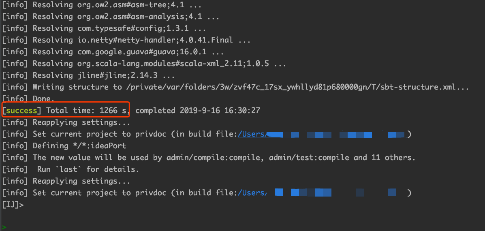
注意图中红框部分，耗时1266秒，近半个小时。在刷新期间资源占用也很高，导致电脑很卡 （风扇还呼呼呼的转，温度蹭蹭蹭的长）。
最关键的是由于依赖的很多服务升级很快 （几乎每天都有升级），所以这个操作每天也会持续很多次，难以想象耗费在这方面的时间是何其之多。
人生苦短，在刷新了几次之后，我再也受不了这漫长的等待时间，于是开始了这漫漫的优化之路。
正所谓工欲善其事必先利其器
Round 1: 十八般武艺齐上阵
不知道大家碰见这种问题会怎么做，我反正是二话不说打开 Google 直接搜： SBT 依赖下载慢。
还别说，有共鸣的人还不少， 总结了下几乎都是以下的解决方案
- 添加代理
- 添加国内镜像源
我这肯定不是源的问题啊，我司用的私有仓库，既然私有jar都下载下来了，肯定是走的私有仓库啊。
翻了几页，没有满意的答案，也试了几个方案，也没啥用。
看来还是得自己从问题的根源开始找起啊……
为了保险起见， 我还是先排查一下是不是镜像问题， 项目的 build.sbt 配置文件中是有私有仓库的相关配置项的：
lazy val commonSettings = Seq(
//....
// ... 私有仓库
resolvers := {Resolver.url("xr-ivy-releasez", new URL("http://nexus.xxxx.com/repository/ivy-releases/"))(Resolver.ivyStylePatterns) +: resolvers.value},
resolvers := { {"xr-maven-public" at "http://nexus.xxxx.com/repository/public/"} +: resolvers.value},
// ....
)
此时我忽然想到一种情况：难道是默认走的公共库，在公共库找不到依赖才会走私有库 ？
为了验证猜想，我使用 wireshark 抓包进行分析，过滤器指定协议 http (因为仓库是走的http)
还可以指定 ip.src 和 ip.dst 从而使得数据包更加符合我们的要求
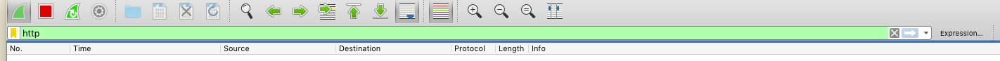
然后打开 sbt shell 进行 update 操作
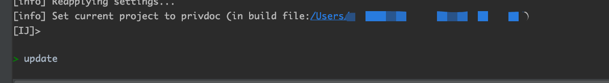
观察抓包结果
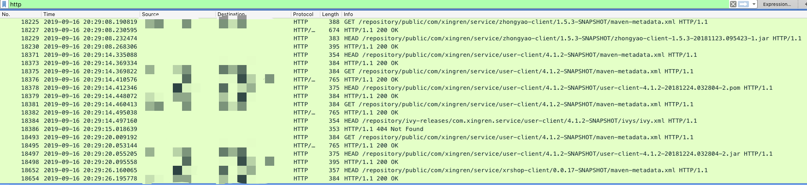
发现访问的都是 /repository/public/*** 的请求，对应的 Host 也是我司的私有库，这说明配置是生效了的，而且都是从私有仓库进行下载。
但是我也发现了一些404的请求
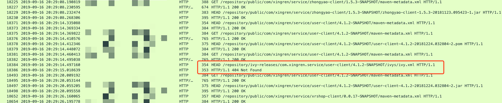
好吧，是我司的私有库没有 /repository/ivy-release ，果断将对应的仓库配置去掉，省去没必要的请求。
虽然走了私有库，但是我每次刷新都会请求仓库，这就不符合道理了，难道 SBT 连基本的依赖缓存都没有 ？
Round 2: 从半小时到五分钟
对抓到的数据包进行再次过滤，只看 Http Request，发现请求的都是 SNAPSHOT 版本的依赖库, 参见下图
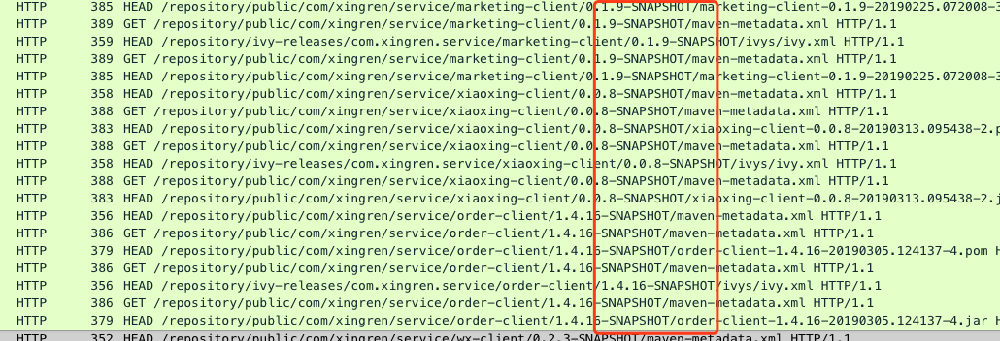
这说明 SBT 是有缓存的，因为正式版都没有请求仓库，可是为什么 SNAPSHOT 每次都去请求远程仓库呢？ 难道是 SNAPSHOT 被区别对待，不会被缓存？
既然 SBT 是基于 Ivy 的，那就从 Ivy下手。
我在Ivy 的官网（http://ant.apache.org/ivy/history/2.0.0/settings/caches.html）找到了下面的一个关于缓存的表格：
| Attribute | Description | Required |
|---|---|---|
| default | the name of the default cache to use on all resolvers not defining the cache instance to use | No, defaults to a default cache manager instance named ‘default-cache’ |
| defaultCacheDir | a path to a directory to use as default basedir for both resolution and repository cache(s) | No, defaults to .ivy2/cache in the user’s home directory |
| resolutionCacheDir | the path of the directory to use for all resolution cache data | No, defaults to defaultCacheDir |
| repositoryCacheDir | the path of the default directory to use for repository cache data. This should not point to a directory used as a repository! | No, defaults to defaultCacheDir |
注意关键字 defaultCacheDir， 这个就是 Ivy 的缓存目录，对应路径为用户目录下的 .ivy2/cache。
我的是 mac， 对应目录就是 ~/.ivy/cache , 果不其然，进入该目录查看一下：
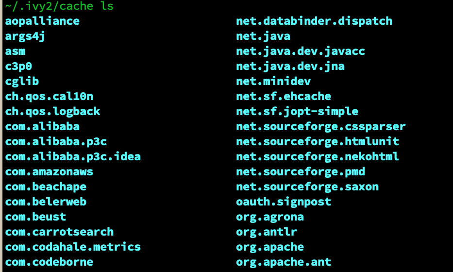
在 ~/.ivy/cache 下发现了很多依赖库的目录， 下面就需要验证一下有没有缓存 SNAPSHOT 的版本了， 以我司的 user-client 4.1.2-SNAPSHOT 为目标进行查找：
从图中显示，目录中明明有缓存 SNAPSHOT 的啊，可为什么不走本地缓存呢 ？
这没办法了，只能去 SBT 官网找答案了，在官网文档找到了 Dependency Management ，看名字似乎和依赖管理有关，
其中的 Cached-Resolution 似乎和缓存相关， 而且开头就是下面这段话
To set up Cached Resolution include the following setting in your project’s build:
updateOptions := updateOptions.value.withCachedResolution(true)
说的是要配置缓存解析，那就得加上 updateOptions := updateOptions.value.withCachedResolution(true) 的配置， 这也太简单了吧？
不管啦，先加上试试。
加配置，刷新，抓包一气呵成, 然而结果惨不忍睹
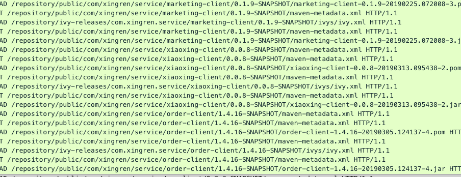
看着一页页的请求发出去，此刻我是奔溃的！贼子安敢欺我！
正在我想静静之际，SBT 刷新完成，我一不小心瞄了一眼，耗时居然只有以前的1/4 了？
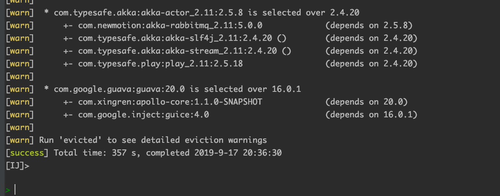
我靠，怎么肥四（回事）？不是没生效吗，怎么时间缩短了这么多？
为了确保不是眼花，我又重启刷新了几次，发现耗时相差无几，而且我发现如果不重启直接update，一般耗时都只有几秒，我的天啦。
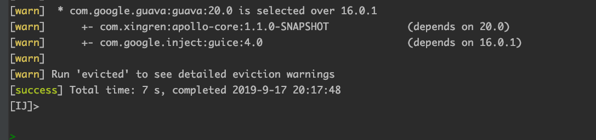
不死心的我又去看了下文档，原来是我对这个配置理解错了，这个配置的意思并不是说 SNAPSHOT 就不请求远程仓库了。
这里的缓存指的是sbt启动后第一次执行update后，会缓存所有的依赖解析信息， 也就是说缓存是和进程相关的。
而我的项目是有4个子项目，每个子项目都共同依赖了 service 模块， 该模块维护着几乎所有的依赖。
当第一个项目 update 后，其他三个项目 update 时都会直接走缓存了，这也是为什么耗时只有最开始1/4。
真实无心插柳柳成荫啊……
Round 3：从五分钟到一分钟
虽然现在时间只要以前的1/4了，可还是要5分钟啊，这绝对不是一个可以将就的数字！
而且还有另外一个非常重要的原因，因为穷！
此话怎讲？因为 SBT 一直启动着太耗内存了，我这可怜的 8G 可得省着点儿。可是停掉 SBT，缓存就得重新构建了，所以是穷激发了我的进一步探索……
再次思考一下：为什么 SNAPSHOT 依赖每次启动都要去远程仓库拉取呢 ？ 能不能只在依赖的版本有更新的时候再去拉取呢 ？
在文档 Cached-Resolution中, 发现了关键词 SNAPSHOT and dynamic dependencies，其中对 SNAPSHOTR 和缓存做了一些描述：
When a minigraph contains either a SNAPSHOT or dynamic dependency, the graph is considered dynamic, and it will be invalidated after a single task execution. Therefore, if you have any SNAPSHOT in your graph, your experience may degrade.
说的是依赖关系中如果有 SNAPSHOT 版本，会导致某个子依赖关系缓存失效， 而这个子依赖就是动态的，反正就是不会走缓存的意思。
既然得知问题的根源是因为使用了 SNAPSHOT, 如果不使用 SNAPSHO 不就没这个问题了嘛。
然而现实是骨感的，公司内部几十个服务大多数都用的 SNAPSHOT 作为版本号，而且各种互相依赖，短时间内是不可能直接过渡的了，所以直接PASS该方案了。
只能继续在文档中摸索，发现一个相关配置
updateOptions := updateOptions.value.withLatestSnapshots(false)
这个配置的作用是什么呢？
因为 SBT 可以配置多个远程仓库源（通过 Resolver），默认情况下 SBT 会从所有的远程仓库去拉取指定版本的 SNAPSHOT 依赖， 然后比对它们的发布时间，取最新的那一个。
通过配置 withLatestSnapshots(false) 可以禁用该策略， 这样 SBT 就直接使用从远程仓库拉取到的第一个 SNAPSHOT 依赖。
加上配置然后测试，发现网络请求数确实少了，整体update耗时减少了一分钟左右，但是这个会导致无法拉取到同版本的最新SNAPSHOT
因为快照在不改变版本的情况下是可以重复发布的，区分同版本不同快照就只能按照时间戳来了。
SBT 无法确定本地的快照是最新的，所以每次启动都会去仓库拉取最新快照。
使用 withLatestSnapshots(false) 后就不会取最新的，而是直接取第一个。
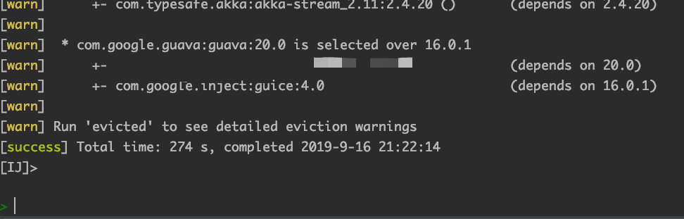
不取最新的 SNAPSHOT 对我们影响不大， 因为我们内部的服务如果有改动，基本就会升级版本号（就算是 SNAPSHOT）, 很少有一直重复发同版本的SNAPSHOT的情况。
这么一说，似乎我们连用
SNAPSHOT的意义都不大了，然而历史原因……
虽然有所提升，但是最关键的问题，SNAPSHOT 每次 update 都会走网络请求的问题还是没解决。
只能继续在文档中挣扎，还好黄天不负有心人啊， 在官方文档 Cache And Configuration 一节找到了相关内容
When
offline := true, remote SNAPSHOTs will not be updated by a resolution, even an explicitly requested update. This should effectively support working without a connection to remote repositories. Reproducible examples demonstrating otherwise are appreciated. Obviously, update must have successfully run before going offline.
文档说如果配置了offline := true, 是不会从远程仓库更新 SNAPSHOT 的依赖了，这不正是我们要的东西吗？
但是后面又说了，更新必须在进入离线模式之前就完成，这句话的意思是不是离线模式下我连版本升级也做不到呢？
只有自己动手了才知道，在不升级版本的情况下，加上配置再次进行 update 并抓包， 没有任何的请求到达仓库了
再来看看最终的更新时间
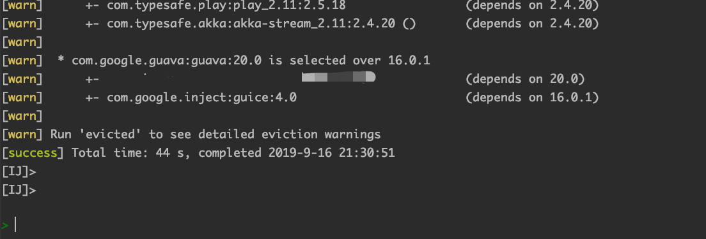
只需要一分钟不到，此刻我得先压制内心的狂喜，再验证一下在 offline := true 的情况下，升级版本是否会从远程仓库请求？
随意修改了一个库的版本，然后重启 sbt 执行 update， 发现是成功从远程仓库拉取到了的，哈哈，一切都不是问题！
新的问题
意外总是伴随着惊喜同时到来，在我随后的使用中却又发现了另外的问题：如果 SBT 的第一次update完成以后， 我随后修改依赖的版本，在不重启SBT的情况下再次执行update，是读不到最新的依赖版本的。
初步猜测是和缓存有关系的，但是问题也不大了，就算更新依赖版本然后重启 SBT 进行 update， 耗时也不过1分钟左右 ，比最开始的半小时已经好多了。
要不，我把这个问题留给你们了？
写在最后
最后从30分钟到1分钟实际上就是在 build.sbt 加了两行配置
offline := true,
updateOptions := updateOptions.value.withCachedResolution(true).withLatestSnapshots(false)
整个分析问题的思路也很简单，就是先找到问题根源，再去找解决方案。
在寻找解决方案的时候一般都是搜索引擎，文档或者源码，正常情况下文档应该都能解决问题了，这期间我就绕了不少弯路，我甚至曾去看了 SBT 的 Resolver 的源码， 现在看来，绝对是跑偏了。
整个解决过程并没有多么高深莫测甚至可以说是无聊至极，因为大部分时间都是看文档并验证其配置。
不过还是那句话：工欲善其事必先利其器